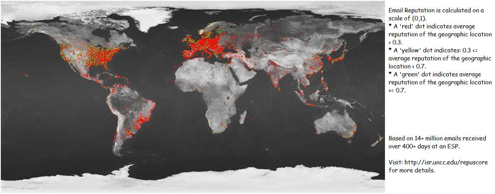

|
Voice and visual interaction using Deep Learning (Convolution Neural Networks) to identify Apple as Apple. February, 2016. |
Voice and visual interaction using Deep Learning (Convolution Neural Networks) to identify Orange as Apricots. February, 2016. |
|
 My doctoral Research on email reputation: RepuScore. 2009. |
 My doctoral research in UNC Charlotte Alumni Magazine (featured in 2007). |